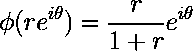

by Louis Webb
Move: WASD
Fire Lasers: left-click
Fire Missiles: right-click
Aim: mouse location
Asteroidal Projection is inspired by the classic arcade game Asteroids, but comes with a twist. The game occurs in the normal Euclidean plane projected radially into the unit disc. An entire infinite 2D space is inside the disc-shaped play area. Sizes and distances are distorted the farther you get from the center, so objects will appear to shrink and go slower as they near the edges of the disc. The grid of white points you see is actually a square grid, which you can use to judge distances.
For the topology nerds out there, play in Asteroidal Projection occurs in the image of the plane through this homeomorphism:
Concept, design, programming, art: Louis Webb
Music: Rocket by Kevin Macleod (incompetech.com)
Licensed under Creative Commons: By Attribution 3.0 License
http://creativecommons.org/licenses/by/3.0/
Coin Sound: ProjectsU012 (unchanged)
https://freesound.org/s/341695/
Made in libGDX